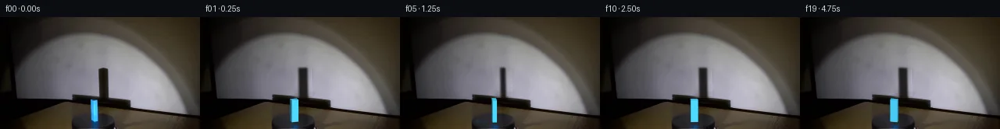

![首帧]()

Round 00
2026-11-05T00:24:05.344853+00:00像素候选变化代码 +268/−0inspection 更新
pixels 418c91511fbde201 · code 8080ed5d21333384
查看本轮 generate.py 真实 diff
--- previous/generate.py +++ current/generate.py @@ -0,0 +1,268 @@ +#!/usr/bin/env python3 +"""Generate the 20-frame PixelWorld continuation from first_frame.png. + +The renderer deliberately uses only local pixel operations and analytic geometry. +Frame zero is never re-rendered: it is copied directly from the supplied PNG. +""" + +from pathlib import Path +import math + +import cv2 +import numpy as np +from PIL import Image, ImageDraw, ImageFont + +import artifact_io + + +ROOT = Path(__file__).resolve().parent +W, H = 256, 144 +N = 20 +SS = 4 + + +def feathered_repair(source, hard_mask, repaired, feather=2.0): + """Composite repaired pixels into source through a small feathered mask.""" + alpha = cv2.GaussianBlur(hard_mask.astype(np.float32), (0, 0), feather) + alpha = np.clip(alpha, 0.0, 1.0)[..., None] + return source * (1.0 - alpha) + repaired * alpha + + +def make_clean_plate(src): + """Remove the initial blue cuboid and its cast wall shadow.""" + srcf = src.astype(np.float32) + + # Reconstruct the smooth spotlight behind the tall wall shadow. A local + # cubic surface is fitted independently per channel from nearby wall pixels. + yy, xx = np.mgrid[53:104, 109:153] + shadow_exclusion = (xx >= 122) & (xx <= 143) & (yy >= 62) + wall_samples = ~shadow_exclusion + xn = (xx - 131.0) / 22.0 + yn = (yy - 79.0) / 26.0 + terms = np.stack( + [ + np.ones_like(xn), xn, yn, xn * xn, xn * yn, yn * yn, + xn ** 3, xn * xn * yn, xn * yn * yn, yn ** 3, + ], axis=-1 + ) + A = terms[wall_samples] + predicted = np.empty((51, 44, 3), np.float32) + for c in range(3): + coef, *_ = np.linalg.lstsq(A, srcf[53:104, 109:153, c][wall_samples], rcond=None) + predicted[..., c] = terms @ coef + + # Retain faint photographic grain using noise taken from an adjacent clean strip. + smooth_src = cv2.GaussianBlur(srcf[53:104, 109:153], (0, 0), 1.15) + noise = srcf[53:104, 109:153] - smooth_src + predicted += np.roll(noise, 17, axis=1) * 0.45 + wall_repair = srcf.copy() + wall_repair[53:104, 109:153] = predicted + shadow_mask = np.zeros((H, W), np.float32) + shadow_mask[61:104, 122:144] = 1.0 + plate = feathered_repair(srcf, shadow_mask, wall_repair, 1.7) + + # Row-wise interpolation follows the very different backgrounds crossed by + # the block: horizontal fixture shadow, turntable top, and cylinder skirt. + block_repair = plate.copy() + rng = np.random.default_rng(7501) + for y in range(102, 140): + left = plate[y, 112].astype(np.float32) + right = plate[y, 130].astype(np.float32) + for x in range(113, 130): + u = (x - 112.0) / 18.0 + value = left * (1.0 - u) + right * u + value += rng.normal(0.0, 0.65, 3) + block_repair[y, x] = value + block_mask = np.zeros((H, W), np.float32) + block_mask[103:139, 113:130] = 1.0 + plate = feathered_repair(plate, block_mask, block_repair, 1.15) + return np.clip(plate, 0, 255) + + +def rotate_turntable_texture(plate, angle): + """Rotate matte texture in elliptical coordinates while retaining fixed light.""" + out = plate.copy() + cx, cy, rx, ry = 120.0, 134.0, 28.5, 11.8 + yy, xx = np.mgrid[0:H, 0:W].astype(np.float32) + dx, dy = (xx - cx) / rx, (yy - cy) / ry … diff truncated; 181 more lines …